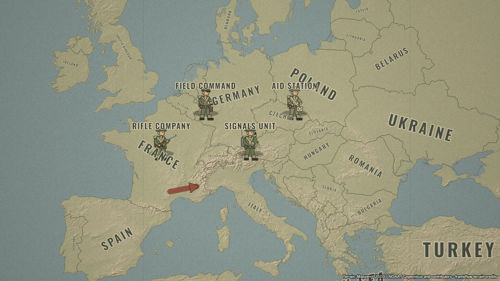

Send fleets into the fog. Take a continent border by border. Command a front line as it breaks. FrameFlow turns every campaign into a cinematic map film.
In your browser. No account needed. Click the map to fire.
41° N / 6° W
00:00.0
30 SEC
An animated illustrative campaign: fleets chart a coastline, a crimson realm conquers a continent, and a blue coalition counterattacks along a moving front line with artillery. Use the timeline to scrub it.
A single pin can explain where. A border or highlight can explain how far. Give your audience a clear place to look.
⌖YOUR NEXT STOP 23.81° N · 90.41° E
Pins that do more
Drop a marker with ripples, show just an icon or just text, or use a picture badge. Animate pins between locations to connect the next part of your story.
Icon + textImage badgesLocation movement
START → END / TRACE ANY SEGMENT
Borders with a beginning
Draw a country outline or sweep borders across the world. Add glow and fill, reverse the direction, or animate a selected section of an outline.
World border sweepPartial outlinesReverse direction
HIGHLIGHT THE AREA / DIM THE REST
Highlights that guide the eye
Light up countries, selected regions, or a radius around a place. Pulse a location and dim the surrounding map to keep attention where it belongs.
Country & region fillsRadius & pulseDim surroundings
EMPIRES / CONQUEST / CHANGING BORDERS
Every empire begins with a line on the map.
Show a realm expanding, a border shifting, or a country coming into focus. Build your own territories from real regions or draw the boundaries your narrative needs.
SELECT WHAT'S INSIDE
Draw to select regions
Click corners or drag an area around the map. Select existing countries or loaded regions by their centers, or include only fully enclosed outlines.
Multi-region selectionCombine or separate
YOUR EXACT OUTLINE
Make a custom region
Use the boundary you draw as a single named region. Animate its border, highlight its area, or trace just part of the outline.
Custom boundariesPartial border animation
WESTERN SECTOR
Let the labels tell the story.
Automatic country and ocean names, custom historical labels, curved text, outlines, and map-attached lettering. Mark locations with pins, image badges, and uploaded artwork.
Turn static positions into a sequence: a shifting front, an advancing formation, a turning point.
◇ INITIAL POSITION◇ NEXT POSITION
Draw the front. Then move it forward.
Set the initial line, move the playhead, and reshape it on the map. The line blends between keyed positions, even when you change the number of points. Choose which side its teeth face.
Watch the front line blend between two keyed positions.
Artillery, musket and arrow volleys, explosions, smoke, fire, shockwaves, and targeted attacks.
▱
Zones & changing states
Attack and retreat arrows, occupied or restricted zones, and keyed unit damage states.
T
Documentary chapters
Scene panels with animated years, event titles, descriptions, gradients, and editable typography.
THE ARSENAL
Raise the armies. Launch the fleets.
Explorers and rulers. Sailing ships and armored columns. Fortresses, cities, and weather. Build a scene from detailed objects, then give each one a role in the story.
THE OBJECT COLLECTION
A cast for every century.
Rendered here with the same vector illustrations you place on your map.
Select multiple objects and turn them into a collapsible group layer. Animate their shared position, rotation, scale, and opacity while keeping each object's own animation.
Army formationsDuplicate & splitUngroup at playhead
▾ ARMY GROUP ◇
↳ Rifle company↳ Armored column↳ Signals unit
TRADE / INFRASTRUCTURE / CONNECTIONS
Every route has a direction.
Draw your own geographic paths to explain movement, transport, supply, and the landscape itself.
01 / ROADS
Trace the advance.
Draw curved or straight roads. Reveal the route over time and animate traffic in either direction.
02 / RAILWAYS
Follow the supply line.
Build railways with rails and sleepers, progressive drawing, and moving traffic markers.
03 / RIVERS
Let the current move.
Trace rivers with visible banks, a progressive reveal, and adjustable current speed and direction.
↝
And every journey gets its own story.
Move planes, ships, vehicles, pins, or objects between places and along drawn paths. Add trails, waypoints, and labels for the countries or regions crossed.
Sculpt the atmosphere before the first frame. Real elevation relief, natural terrain, archival cartography, satellite imagery, and a palette for every kind of world.

46° 35′ N 09° 47′ E THE ALPINE LANDSCAPE
REAL ELEVATION. YOUR DIRECTION.
Mountains that set the mood.
Shape the light. Deepen the ocean. Let the landscape carry the story.
ALSO IN YOUR ATLASCartographic reliefNatural terrainSatellite imageryWar documentary
FEEL THE SURFACE
A world with a little more texture.
Six distinct finishes, all visible here. Each animated sweep brings the texture across the same map. In the studio, set the strength and scale to make it yours.
01 / SURFACE STUDY
Paper grain
An archival field journal.
02 / SURFACE STUDY
Film grain
A little cinematic imperfection.
03 / SURFACE STUDY
Linen
A woven, tactile surface.
04 / SURFACE STUDY
Halftone dots
The language of printed maps.
05 / SURFACE STUDY
Abstract blotches
Soft, weathered variation.
06 / SURFACE STUDY
Brush strokes
A painterly map surface.
Actual studio textures · animated comparison · adjustable strength & scale
CINEMA / HISTORY / DOCUMENTARY
Your map. Your point of view.
Pull back to show the context. Fly in to explain a detail. Use camera presets or key position, zoom, tilt, and rotation at the playhead.
Camera movesFly to, swoop, pan, orbit, push in, pull back, and follow a traveler.
A frame-based timelineScrub, trim, split, move clips, and retime keyframes with draggable diamonds.
Room for every formatLandscape, full HD, square, and portrait. Vertical projects get a dedicated editing layout.
A smoother workflowPreview zoom, fullscreen, snapping, layer visibility, undo, redo, and keyboard shortcuts.
MAP / TIMELINE00:02:12 30 FPS
◎ZOOM · TILT · ROTATE
0s2s4s6s
Camera
Front line
Road / rail
Army group
FROM YOUR TIMELINE TO THEIR SCREEN
Made to be shared.
Export your map as a video or capture any frame as a clean PNG. Download the project to keep editing later.
▶
Video & stills
Frame-by-frame WebM video and PNG snapshots, with the map's styling and animation intact.
♫
Audio for your edit
Add reference audio and include retained audio parts in video exports. Audio imports stay in the current session.
↧
Keep the project
Local browser saving plus downloadable project files for backups and future edits.
THE COMPLETE TOOLKIT
Everything you can put on the map.
Explore the everyday essentials and the specialist tools. Search for a feature or choose a category to find your next idea.